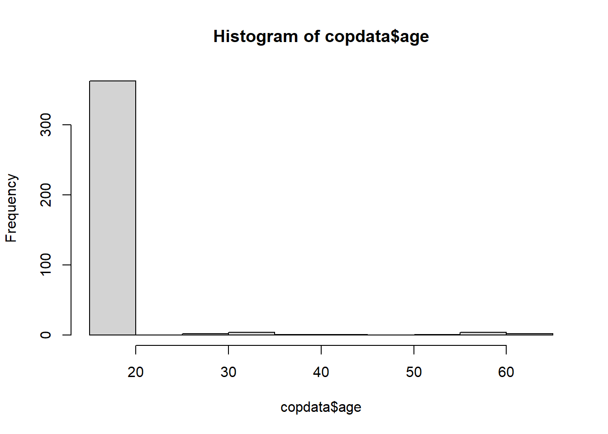
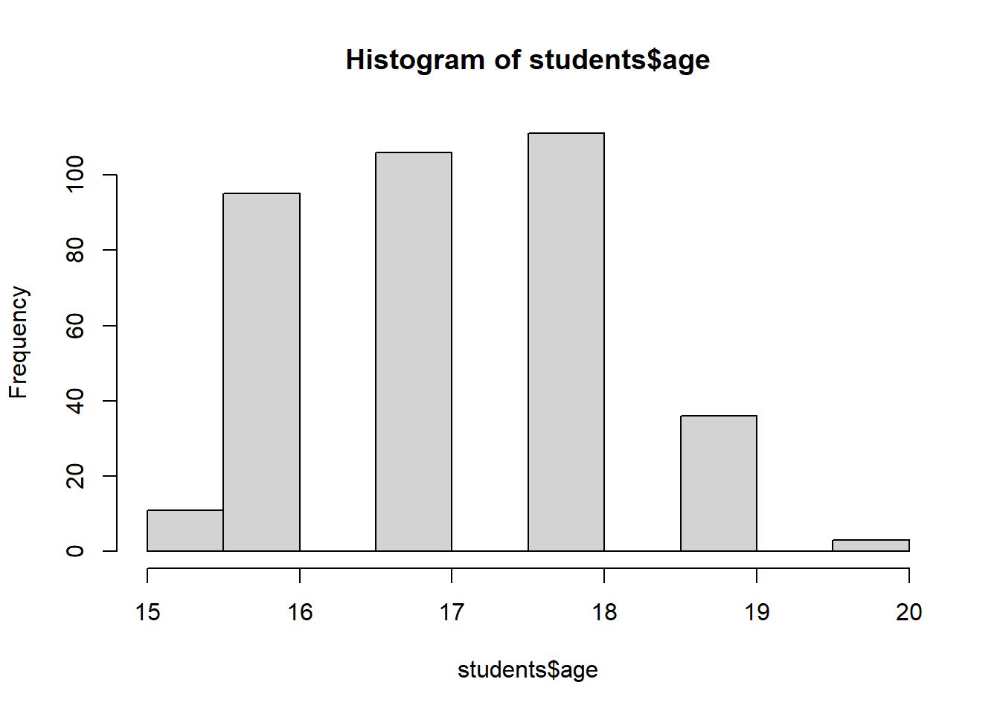

# Load the required libraries into the current R session:
pacman::p_load(rio,
here,
tidyverse,
skimr,
plyr,
janitor,
lubridate,
gtsummary,
flextable,
officer,
epikit,
apyramid,
scales,
EpiStats,
broom)Univariable analysis - Inj14
1. Install packages and load libraries
2. Import your data
# Import the raw data set:
copdata <- rio::import(here::here("data", "Copenhagen_clean2.rds"))3. Hypothesis tests for other variables
a) age
With the Shapiro-Wilk test we check if the variables are following the normal distribution. The null hypothesis is that the data follow a normal distribution, therefore, rejecting the null hypothesis means that the data do not follow the normal distribution. A p-value below the cutoff for rejecting the null hypothesis, e.g., a p-value<0.05 means that we reject the null hypothesis that the data follow the normal distribution. For age, the p-value is <0.05, therefore we reject the null hypothesis that the data are normally distributed. As we see in the graph most frequently reported age is <20 years.
# Check if age overall follows a normal distribution:
shapiro.test(copdata$age)
Shapiro-Wilk normality test
data: copdata$age
W = 0.31302, p-value < 2.2e-16# Can simply have a look at
hist(copdata$age)
# Looking only at the students:
students <- copdata %>%
filter(group == "student")
hist(students$age)
Age overall (nor within the students’ group) is not normally distributed.
We compare the age for cases and non-cases using the Wilcoxon test that is used when the data are not normally distributed. The null hypothesis is that there is no difference in the age between the two groups compared. Given that p-value>0.05 we do not reject the null hypothesis.
# Perform Wilcoxon rank sum test on age and sex:
wilcox.test(age ~ case,
data = copdata)
Wilcoxon rank sum test with continuity correction
data: age by case
W = 15934, p-value = 0.1512
alternative hypothesis: true location shift is not equal to 0b) sex
copdata %>%
select(sex, case) %>%
tbl_summary(by = case) %>%
add_p()| Characteristic | FALSE, N = 1611 | TRUE, N = 2161 | p-value2 |
|---|---|---|---|
| sex | 0.3 | ||
| female | 96 (60%) | 117 (54%) | |
| male | 65 (40%) | 99 (46%) | |
| 1 n (%) | |||
| 2 Pearson’s Chi-squared test | |||
c) class
copdata %>%
select(class, case) %>%
tbl_summary(by = case) %>%
add_p()| Characteristic | FALSE, N = 1611 | TRUE, N = 2161 | p-value2 |
|---|---|---|---|
| class | 0.090 | ||
| 1 | 63 (43%) | 68 (34%) | |
| 2 | 44 (30%) | 57 (29%) | |
| 3 | 38 (26%) | 73 (37%) | |
| Unknown | 16 | 18 | |
| 1 n (%) | |||
| 2 Pearson’s Chi-squared test | |||
d) group
copdata %>%
select(group, case) %>%
tbl_summary(by = case) %>%
add_p()| Characteristic | FALSE, N = 1611 | TRUE, N = 2161 | p-value2 |
|---|---|---|---|
| group | 0.2 | ||
| teacher | 9 (5.6%) | 6 (2.8%) | |
| student | 152 (94%) | 210 (97%) | |
| 1 n (%) | |||
| 2 Pearson’s Chi-squared test | |||
Let’s do all together
copdata %>%
select(sex, class, group, case) %>%
tbl_summary(by = case) %>%
add_p()| Characteristic | FALSE, N = 1611 | TRUE, N = 2161 | p-value2 |
|---|---|---|---|
| sex | 0.3 | ||
| female | 96 (60%) | 117 (54%) | |
| male | 65 (40%) | 99 (46%) | |
| class | 0.090 | ||
| 1 | 63 (43%) | 68 (34%) | |
| 2 | 44 (30%) | 57 (29%) | |
| 3 | 38 (26%) | 73 (37%) | |
| Unknown | 16 | 18 | |
| group | 0.2 | ||
| teacher | 9 (5.6%) | 6 (2.8%) | |
| student | 152 (94%) | 210 (97%) | |
| 1 n (%) | |||
| 2 Pearson’s Chi-squared test | |||
4. Risk Ratios
The risk ratios of each food item (including the 2x2 table) are reported below. The output of the CS() command is two tables (one with the 2x2 table and one with the risk difference, the risk ratio and the attributable fraction among exposed as well as the attributable fraction among the population (and the confidence intervals for all the estimates). The Chi-square and the p-value are also reported. In the second part, a table with all the food items is printed including attack rates for exposed and unexposed as well as risk ratios and the 95% confidence intervals (CI ll and CI ul, for the lower and upper interval) and p-values.
a) Calculate 95% CI Risk Ratios for food
# You could use the EpiStats package for each food item
CS(copdata, "case", "tuna")$df1
Cases Non Cases Total Risk
Exposed 156 115 271 0.58
Unexposed 60 42 102 0.59
Total 216 157 373 0.58
$df2
Point estimate 95%CI ll 95%CI ul
Risk difference -0.01 -0.12 0.10
Risk ratio 0.98 0.81 1.19
Prev. frac. ex. 0.02 -0.19 0.19
Prev. frac. pop 0.02 NA NA
chi2(1) 0.05 NA NA
Pr>chi2 0.826 NA NACS(copdata, "case", "shrimps")$df1
Cases Non Cases Total Risk
Exposed 150 105 255 0.59
Unexposed 65 52 117 0.56
Total 215 157 372 0.58
$df2
Point estimate 95%CI ll 95%CI ul
Risk difference 0.03 -0.08 0.14
Risk ratio 1.06 0.87 1.28
Attr. frac. ex. 0.06 -0.14 0.22
Attr. frac. pop 0.04 NA NA
chi2(1) 0.35 NA NA
Pr>chi2 0.553 NA NACS(copdata, "case", "green")$df1
Cases Non Cases Total Risk
Exposed 123 93 216 0.57
Unexposed 83 60 143 0.58
Total 206 153 359 0.57
$df2
Point estimate 95%CI ll 95%CI ul
Risk difference -0.01 -0.12 0.09
Risk ratio 0.98 0.82 1.18
Prev. frac. ex. 0.02 -0.18 0.18
Prev. frac. pop 0.01 NA NA
chi2(1) 0.04 NA NA
Pr>chi2 0.837 NA NACS(copdata, "case", "veal")$df1
Cases Non Cases Total Risk
Exposed 201 137 338 0.59
Unexposed 14 22 36 0.39
Total 215 159 374 0.57
$df2
Point estimate 95%CI ll 95%CI ul
Risk difference 0.21 0.04 0.37
Risk ratio 1.53 1.01 2.32
Attr. frac. ex. 0.35 0.01 0.57
Attr. frac. pop 0.32 NA NA
chi2(1) 5.64 NA NA
Pr>chi2 0.018 NA NA# And so one# You can save time (and probably typos!) by creating a vector for food variables...
food_vars <- c("tuna", "shrimps", "green", "veal",
"pasta", "rocket", "sauce", "bread",
"champagne", "beer", "redwine", "whitewine")
# ...and using EpiStats::CSTable() to run all variables together!
CSTable(copdata, "case", food_vars)$df
Tot.Exp. Exp.Cases AR% Tot.Unex. Unex.Cases AR% RR CI ll CI ul
pasta 338 202 59.76 36 13 36.11 1.65 1.06 2.58
veal 338 201 59.47 36 14 38.89 1.53 1.01 2.32
champagne 316 187 59.18 48 21 43.75 1.35 0.97 1.89
rocket 211 114 54.03 154 95 61.69 0.88 0.73 1.04
sauce 149 90 60.40 198 106 53.54 1.13 0.94 1.36
beer 281 166 59.07 78 41 52.56 1.12 0.89 1.42
redwine 80 42 52.50 259 150 57.92 0.91 0.72 1.14
shrimps 255 150 58.82 117 65 55.56 1.06 0.87 1.28
whitewine 260 150 57.69 98 54 55.10 1.05 0.85 1.29
bread 342 196 57.31 29 16 55.17 1.04 0.74 1.46
tuna 271 156 57.56 102 60 58.82 0.98 0.81 1.19
green 216 123 56.94 143 83 58.04 0.98 0.82 1.18
p(Chi2)
pasta 0.006
veal 0.018
champagne 0.044
rocket 0.144
sauce 0.202
beer 0.303
redwine 0.393
shrimps 0.553
whitewine 0.659
bread 0.823
tuna 0.826
green 0.837b) Prepare the RR table for publication
rr_tbl <- CSTable(copdata, "case", food_vars) %>%
as.data.frame() %>%
rownames_to_column() %>%
flextable() %>%
set_header_labels(
values = c("Food Item",
"Total exposed",
"Cases exposed",
"AR among exposed",
"Total unexposed",
"Cases unexposed",
"AR among unexposed",
"RR",
"95% lower CI",
"95% upper CI",
"p-value"))5. Dose Response
a) Pasta
# Binomial regression for RRs.
# The outcome needs to be exponentiated so we can interpret it properly!
binom_pastaD <- glm(case ~ pastaD, data = copdata,
family = binomial(link = "log"))
# To get exponentiated:
binom_pastaD_exp <- glm(case ~ pastaD, data = copdata,
family = binomial(link = "log")) %>%
tidy(exponentiate = TRUE,
conf.int = TRUE)
binom_pastaD_exp# A tibble: 4 × 7
term estimate std.error statistic p.value conf.low conf.high
<chr> <dbl> <dbl> <dbl> <dbl> <dbl> <dbl>
1 (Intercept) 0.361 0.222 -4.60 0.00000433 0.218 0.524
2 pastaD1 1.50 0.247 1.65 0.0993 0.963 2.58
3 pastaD2 1.62 0.230 2.09 0.0364 1.09 2.72
4 pastaD3 1.86 0.234 2.64 0.00826 1.23 3.14 b) Veal
# Let's get the results directly exponentiated
binom_vealD_exp <- glm(case ~ vealD, data = copdata,
family = binomial(link = "log")) %>%
tidy(exponentiate = TRUE,
conf.int = TRUE)
binom_vealD_exp# A tibble: 4 × 7
term estimate std.error statistic p.value conf.low conf.high
<chr> <dbl> <dbl> <dbl> <dbl> <dbl> <dbl>
1 (Intercept) 0.441 0.193 -4.24 0.0000224 0.283 0.608
2 vealD1 1.30 0.219 1.18 0.238 0.871 2.09
3 vealD2 1.31 0.203 1.31 0.189 0.921 2.06
4 vealD3 1.41 0.210 1.62 0.105 0.970 2.25 c) Champagne
# Let's get the results directly exponentiated
binom_champagneD_exp <- glm(case ~ champagneD, data = copdata,
family = binomial(link = "log")) %>%
tidy(exponentiate = TRUE,
conf.int = TRUE)
binom_champagneD_exp# A tibble: 4 × 7
term estimate std.error statistic p.value conf.low conf.high
<chr> <dbl> <dbl> <dbl> <dbl> <dbl> <dbl>
1 (Intercept) 0.438 0.164 -5.05 0.000000439 0.303 0.578
2 champagneD1 1.24 0.176 1.24 0.215 0.911 1.83
3 champagneD2 1.66 0.188 2.70 0.00684 1.17 2.48
4 champagneD3 1.48 0.187 2.10 0.0359 1.05 2.21